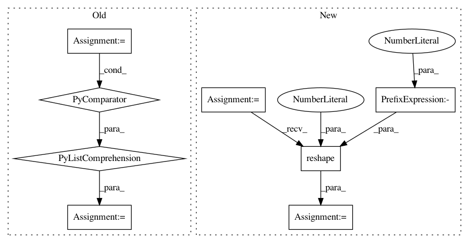

76b2432b1c1ee03c80895a5c7d49cde485323102,qucumber/nn_states/complex_wavefunction.py,ComplexWaveFunction,rotated_gradient,#ComplexWaveFunction#,163
Before Change
of the amplitude and phase RBMS
:rtype: list[torch.Tensor, torch.Tensor]
rotated_grad = [
torch.zeros(
2, getattr(self, net).num_pars, dtype=torch.double, device=self.device
)
for net in self.networks
]
Upsi, Upsi_v, v = unitaries.rotate_psi_inner_prod(
self, basis, sample, include_extras=True
)
After Change
self, basis, sample, include_extras=True
)
vr = v.reshape(-1, v.shape[-1])
raw_grads = [
self.am_grads(vr).reshape(2, *v.shape[:-1], -1),
self.ph_grads(vr).reshape(2, *v.shape[:-1], -1),
]
rotated_grad = [cplx.einsum("s...,s...g->...g", Upsi_v, g) for g in raw_grads]
grad = [
In pattern: SUPERPATTERN
Frequency: 3
Non-data size: 8
Instances
Project Name: PIQuIL/QuCumber
Commit Name: 76b2432b1c1ee03c80895a5c7d49cde485323102
Time: 2019-12-22
Author: emerali@users.noreply.github.com
File Name: qucumber/nn_states/complex_wavefunction.py
Class Name: ComplexWaveFunction
Method Name: rotated_gradient
Project Name: Esri/raster-functions
Commit Name: 1aff9ce62a0c9db7f02b93830fed4073fed49bd1
Time: 2015-02-02
Author: jwasilkowski@esri.com
File Name: functions/LinearSpectralUnmixing.py
Class Name: LinearSpectralUnmixing
Method Name: updatePixels
Project Name: scikit-learn-contrib/DESlib
Commit Name: 44bdf9be3b913a1a0e90115e45edbee192d01b90
Time: 2018-03-31
Author: rafaelmenelau@gmail.com
File Name: deslib/des/probabilistic.py
Class Name: Probabilistic
Method Name: estimate_competence